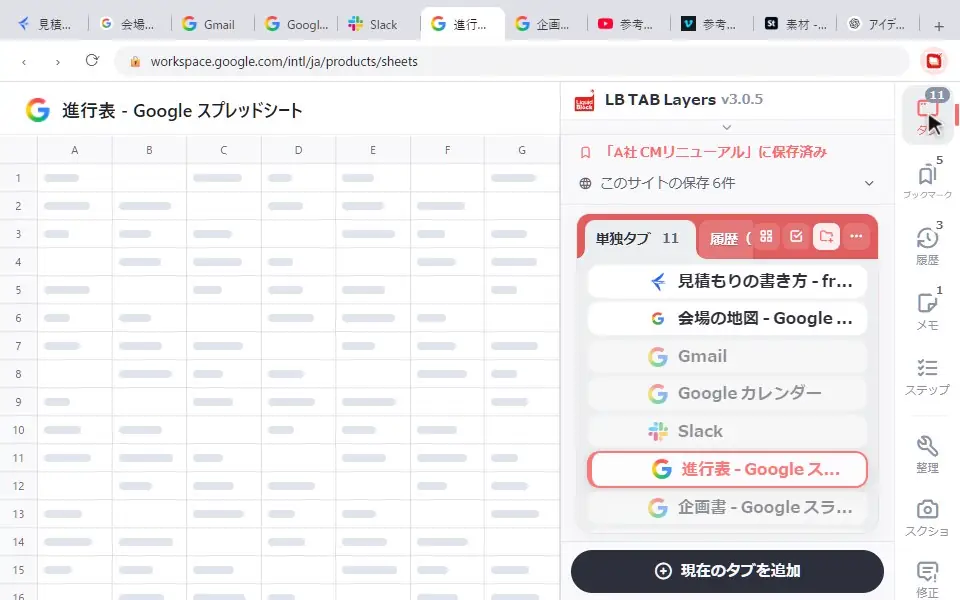

「履歴（1週間）」は、この1週間（今日を入れて7日）に見たページを、サイドパネルに並べる機能です。右の列の「履歴」を押すと開きます。日ごとに見出しが付き、新しい順に、見た時刻つきで並びます。今開いているタブは出ないので、「閉じたページ」だけを探せます。押せばもう一度開きます。日を選んだり、開始と終了の時刻を入れたりして「この時間帯を開く」を押すと、その時間に見ていたページをまとめて開けます。PRO の機能で、インストールから30日間の試用期間中は使えます。
「さっきのページ、閉じちゃった」。作業中によくあることです。LB TAB Layers の「履歴（1週間）」なら、作業中の画面のまま、この1週間に見たページの中から探して開き直せます。
動く画面で見る：閉じたタブを開き直す
右の列の「履歴」を押すと、この1週間に見たページが、日ごとに並びます。開き直したいページを押すだけです。

並ぶもの・並ばないもの
| 並ぶもの | 並ばないもの |
|---|---|
| この1週間（今日を入れて7日）に見たページ（新しい順。日ごとに見出しが付きます） | 今開いているタブ（「タブ」の画面に出ています） |
| 同じページを何度も見たときは、いちばん新しい1件 | Chrome の設定画面など（chrome:// のページ）や、拡張のページ |
各行の右には、そのページを見た時刻（「10:05」のような形）が出ます。日が変わるところには、「今日」「昨日」「11/18(火)」のような見出しが入ります（検索でしぼったときは、見出しは出ません）。
履歴でできること
| やりたいこと | 操作 |
|---|---|
| 開き直す | 行を押す（新しいタブで開きます） |
| 今の画面のまま、後ろで開く | 行をマウスのホイールで押す（中クリック） |
| 言葉でしぼる | パネルの検索欄に、ページ名やサイト名の一部を入れる |
| 日をしぼる | 時刻の欄の左のメニューで、「1週間」「今日」「昨日」や日付を選ぶ |
| グループに残す | 右クリック →「フォルダに保存」、またはグループへドラッグ |
| ピンバーに置く | 右クリック →「ピンバーに追加」 |
日と時間帯をしぼって、まとめて開く
履歴の上に、日を選ぶメニューと、時刻を入れる欄が2つあります。日を選ぶと、その日に見たページだけになります。始めの時刻と終わりの時刻を入れると、その間に見たページだけが並びます。日が「1週間」のままなら、毎日のその時間帯（たとえば毎日 9:00〜10:00）に見たページが並びます。
日を選んで、時刻を入れる
たとえば日を「今日」にして「9:00」と「12:00」を入れると、今日の午前中に見たページだけになります。
「この時間帯を開く」を押す
ボタンには、開くページの数が「この時間帯を開く（8）」のように出ます。押すと、並んでいるページをまとめて開きます。古い順に開くので、見ていた順番のまま、タブが並びます。
元に戻すときは「すべて」
「すべて」を押すと、日が「1週間」に戻り、時刻の欄が空になって、1週間ぶんの一覧に戻ります。
10件より多いページを開くときは、「○ 件のタブを開きます。よろしいですか？」と確かめてから開きます。今開いているタブは一覧に出ないので、同じページが二重に開くことはありません。
こんなふうに使うと便利
ページの名前を思い出せないときは、時刻から
「会議の前に見ていた、あの資料」。名前は出てこなくても、時刻なら覚えていることがあります。時刻を手がかりにした探し方は さっき閉じたタブを、時刻から探す方法 にまとめました。
午前中の作業を、午後にそのまま戻す
お昼の前にタブを全部閉じても、午後に日を「今日」にして「9:00〜12:00」で「この時間帯を開く」を押せば、午前中に見ていたページが同じ順に戻ります。
また使うページは、グループへ
履歴は1週間ぶんだけです。そのあとも使うページは、右クリック →「フォルダに保存」でグループに入れておくと、Chrome のブックマークとして残ります（→ タブを保存する3つの方法）。
知っておきたいこと
- 1週間ぶんだけです。それより前のページは、Chrome の履歴（Ctrl+H）から探してください（→ 閉じたタブを復元する方法）
- 直前に閉じた1枚なら、ショートカットが早いです。Ctrl+Shift+T（Mac は ⌘+Shift+T）で戻せます（→ 閉じたタブを元に戻すショートカット）
- 選んだ日と入れた時刻は、パネルを開いている間だけ覚えています。パネルを開き直すと、1週間ぶんの一覧に戻ります
- 一覧は、選んだ範囲の履歴の新しいほうから最大1500件をもとに作ります
ℹ️ 履歴（1週間）は PRO の機能です。インストールから30日間の試用期間中は使えます。
🎬 履歴のほかにも、いろいろできます。パネルを開く、保存したタブを開く、閉じたタブを履歴から戻す、ページにひもづけたメモ、ピンバーまで。ブラウザとパネルの動きをそのまま見られる 操作ガイド（動く画面で見る10の操作） にまとめています。入れたばかりの方は クイックチュートリアル（5分） からどうぞ。
よくある質問
Q. 履歴はどこにありますか？
サイドパネルの右の列にある「履歴」を押すと開きます。マウスを乗せると「履歴（1週間）」と出ます。
Q. 昨日やその前に見たページも出ますか？
はい。今日を入れて7日ぶんのページが、日ごとに並びます。時刻の欄の左のメニューで「今日」「昨日」などを選ぶと、その日のページだけになります。それより前のページは、Chrome の履歴（Ctrl+H）で探してください。
Q. うっかり閉じたタブを開き直すには？
「履歴」を開き、そのページの行を押します。新しいタブでもう一度開きます。今開いているタブは一覧に出ないので、閉じたページだけを探せます。
Q. ある時間に見ていたページを、まとめて開けますか？
はい。履歴の上の欄に始めと終わりの時刻を入れ、「この時間帯を開く」を押します。古い順に開くので、見ていた順番のままタブが並びます。10件より多いときは、開く前に確かめます。
Q. 無料版で使えますか？
履歴（1週間）は PRO の機能です。インストールから30日間の試用期間中は使えます。
▶ 実際の操作を動画で見る
サイドバーで、ブックマークとタブをいっしょに管理する様子です。